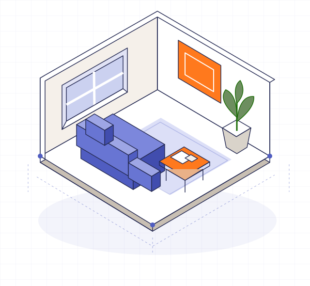

Projet français en préparation · Premier terrain envisagé : Toulouse

Votre idéeEt si on refaisait le salon ?
Le point de rencontre↗Un besoin. Un savoir-faire.
0 %de commission sur les travaux
Illustration du concept · Aucun chantier réel représenté
✓ Vous gardez le choix✓ Une relation directe✓ Le savoir-faire au premier plan
01 / Le point de rencontre
Deux besoins. Un coup de pouce.
D’un côté, un projet qui mérite d’être compris. De l’autre, un professionnel qui veut consacrer son temps aux bonnes demandes. UCP veut rendre cette rencontre plus utile.
Pour les particuliers
Vos idées prennent une direction.
Vous ne savez pas toujours quel métier solliciter ni comment présenter vos travaux. UCP est pensé pour vous aider à préciser votre besoin, comparer les profils et choisir avec qui échanger.
Un besoin clairDes profils à comparerVotre décision
Pour les professionnels du BTP
Votre savoir-faire. Les projets qui vont avec.
Votre métier, votre zone, vos spécialités. Le parcours prévu vous permettra de repérer les demandes adaptées et de choisir celles auxquelles répondre, tout en gardant votre liberté commerciale.
Nature des travaux, zone, délai et informations utiles : une demande claire donne aux professionnels les bons repères.
02
Découvrir les candidatures
Les professionnels intéressés choisissent de répondre. Vous comparez leurs compétences et les éléments de leur profil.
03
Choisir, puis échanger
Vous décidez avec qui avancer. Devis, rendez-vous et paiement des travaux restent directement entre vous et le professionnel.
01
Présenter votre métier
Votre activité, vos spécialités, votre zone d’intervention et vos réalisations donnent du sens à votre profil.
02
Choisir vos projets
Vous candidatez aux demandes qui correspondent à votre savoir-faire et à votre disponibilité. Vous restez libre de répondre.
03
Créer une relation directe
Après sélection, un abonnement professionnel actif permettra l’échange. Vos devis et vos paiements resteront entre vous et votre client.
Ces parcours présentent le fonctionnement envisagé. La plateforme n’est pas encore ouverte aux utilisateurs.
03 / Essayez le principe
Un projet bien posé, ça change tout.
Quelques précisions suffisent à rendre une idée plus lisible. Construisez un exemple de brief et gardez-le pour vous.
Atelier de préparation
Votre point de départ.
Démonstration locale, sans IA ni envoi à un professionnel. Aucun projet n’est publié et aucune donnée personnelle n’est demandée.
Un brief plus clairEXEMPLE · NON PUBLIÉ
Mon projet de travaux
Rafraîchir les murs d’une pièce
Métier à explorer
Peinture intérieure
Maturité
J’explore encore les possibilités
Horizon
Je suis flexible
Pour aller plus loin
Estimer la surface à peindre et préciser l’état des supports.
Préparer des photos de la pièce et des murs.
Décrire les couleurs et finitions envisagées.
Ce support aide à préparer un échange. Il ne constitue ni un devis, ni un diagnostic technique.
0%
de commission sur les travaux
04 / Un modèle lisible
Votre chantier. Votre relation.
UCP prévoit de se rémunérer par un abonnement professionnel. Aucun pourcentage sur le devis, l’acompte ou le montant final des travaux. Aucun paiement à l’unité pour ouvrir une conversation.
Aucune offre souscriptible ni facturation sur cette vitrine.
05 / Notre vision de l’IA
Mieux se comprendre. Avant de se rencontrer.
Nous souhaitons explorer l’IA pour aider à structurer une demande, repérer les précisions manquantes et préparer des échanges plus utiles. Les choix restent entre les mains des utilisateurs.
Exemple rédigé pour illustrer la vision, sans appel à une IA.
06 / Construire avec méthode
Un cap clair. Un lancement à préparer.
UCP est un projet français en cours de création. Une première base technique existe ; la préparation et la vérification du produit précèdent son ouverture.
Aujourd’hui / En préparation
Consolider le produit
Clarifier les parcours, récupérer la base technique et préparer les vérifications avant les premiers usages réels.
Prochaine étape / À valider
Tester à petite échelle
Valider les parcours et l’utilité des mises en relation avant d’envisager une ouverture autour de Toulouse.
À terme / Notre ambition
Grandir sur des preuves
Étendre progressivement les métiers et les territoires à partir de résultats observés sur le terrain.
Pas encore. Cette vitrine présente le concept et permet de préparer un exemple de brief. La plateforme et les inscriptions ne sont pas ouvertes ; aucune date de lancement n’est annoncée.
Pourquoi « sans commission » ?
Le modèle prévu repose sur des abonnements professionnels et ne prélève aucun pourcentage sur les travaux réalisés. Les devis et paiements du chantier restent directement entre le client et le professionnel.
Est-ce gratuit pour un particulier ?
Oui, le modèle prévoit une utilisation gratuite pour les demandeurs. Les tarifs professionnels prévus sont présentés sur la page du projet ; aucune souscription n’est proposée ici.
Les professionnels seront-ils vérifiés ?
La vérification des informations professionnelles fait partie des sujets de préparation. Aucun professionnel n’est présenté comme déjà vérifié sur ce site. Un contrôle administratif ne remplace pas l’examen des assurances, références et conditions d’un devis.
Quelle place aura l’intelligence artificielle ?
Nous envisageons l’IA comme une aide à la formulation et à la compréhension des demandes. L’intégration reste à développer et à évaluer. La démonstration de cette vitrine fonctionne avec des règles locales, sans IA.
UCP est-il déjà une société immatriculée ?
Non. Un Coup de Pouce est un projet de startup française en cours de création. L’immatriculation est prévue dans les prochains mois. La vitrine ne permet ni commande, ni paiement, ni réservation de travaux.
Un projet à comprendre. Une vision à partager.
La suite commence par une bonne rencontre.
Découvrez ce que nous construisons et les choix qui nous guident.